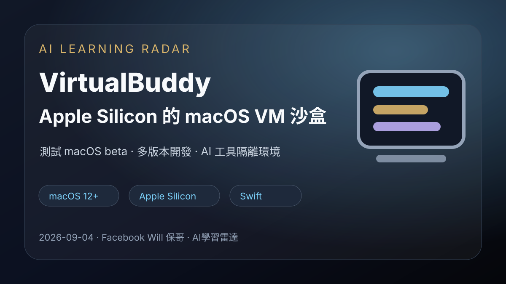
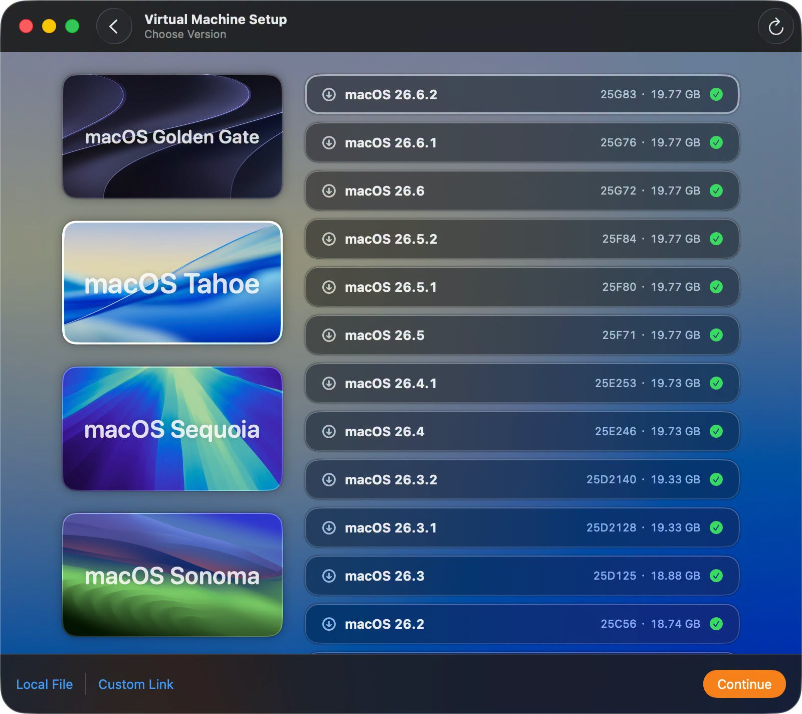
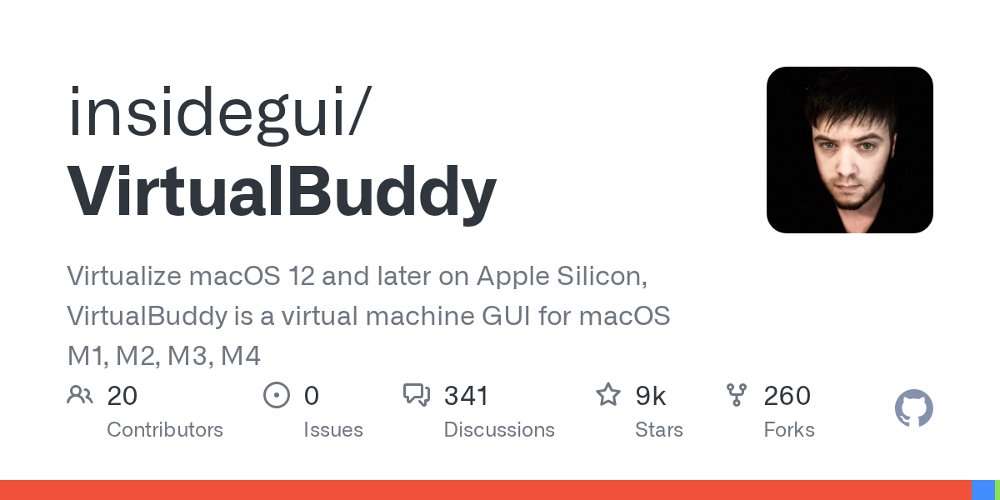

Facebook｜Will 保哥：VirtualBuddy 在 Apple Silicon 上多開 macOS 虛擬機

一句話摘要
Will 保哥分享 VirtualBuddy：一套免費開源、在 Apple Silicon Mac 上建立 macOS 12+ 虛擬機的 GUI 工具，適合開發者測試多版本 macOS、beta 系統與乾淨環境。貼文畫面顯示可直接選擇 macOS Tahoe/Sequoia/Sonoma、IPSW 或自訂連結建立 VM；留言補充 GitHub 專案 insidegui/VirtualBuddy。
來源脈絡
- Facebook 分享連結：https://www.facebook.com/share/1GqeyHJ5eA/?mibextid=wwXIfr
- Canonical：https://www.facebook.com/photo.php?fbid=1526037686216982&set=a.348225173998245&type=3
- 作者：Will 保哥的技術交流中心
- 貼文主文：「VirtualBuddy 好好用喔，完全免費，在 macOS 的安裝體驗又好！我要多開幾個分身了，這時 128GB RAM + 8TB 硬碟就很好用！」
- 留言補充 GitHub repo：https://github.com/insidegui/VirtualBuddy
- 可見互動：擷取時約 478 個心情、10 則留言、94 次分享；社群計數會隨時間變動。
代表畫面

畫面是 VirtualBuddy 的「Virtual Machine Setup」流程，可從清單選擇多個 macOS 版本，包含 macOS Golden Gate、macOS Tahoe、macOS Sequoia、macOS Sonoma，也支援 LocalFile 與 CustomLink。
GitHub 專案重點

- Repo：https://github.com/insidegui/VirtualBuddy
- GitHub description：Virtualize macOS 12 and later on Apple Silicon, VirtualBuddy is a virtual machine GUI for macOS M1, M2, M3, M4。
- 主要語言：Swift，另有 Objective-C、Shell、C。
- License：BSD-2-Clause。
- 最新 release（擷取時）：Version 2.1，發布於 2025-09-14。
- main README 註記：若要在 macOS 26 host 安裝 macOS Golden Gate beta，需要 VirtualBuddy 2.2 beta 2 或更新版本，並安裝 Apple 最新 device support files；若已安裝 Xcode 27 beta 則不需另裝。
- 系統需求：Apple Silicon Mac、macOS 13 或更新版本。
主要用途
- 在 Apple Silicon Mac 上快速建立 macOS 12+ 虛擬機。
- 測試不同 macOS 版本或 beta 系統，降低主系統被破壞的風險。
- 用乾淨 VM 測試 app、安裝流程、權限、系統設定與相容性。
- 透過 APFS clone 複製乾淨 VM，快速重置測試環境。
- 搭配 Guest app 取得 host/guest 剪貼簿與共享資料夾能力。
對 AI 學習雷達的價值
這則不是直接介紹 AI 模型，但對 AI 工具開發與教學環境很實用：
- 可以隔離測試 Claude Desktop、Ollama、MCP server、Hermes Agent、瀏覽器 automation 或各種 beta 版工具。
- 適合做課程示範環境：每位學員可在乾淨 macOS VM 中演練，不污染主機。
- 對需要大量測試 LINE/Telegram bot、macOS 權限、檔案處理、CLI 安裝流程的工作流，有可重現環境價值。
- 欒帥若在 128GB RAM / 大容量 SSD 的 Mac 上操作，多開 macOS 分身可成為「AI 開發沙盒」策略。
導入前檢核
- 主機是否為 Apple Silicon，且 macOS 13+？
- 是否需要測試 macOS beta？若是，先確認 VirtualBuddy beta 版本與 Apple device support files。
- VM 需要的 RAM、CPU、磁碟空間是否足夠？macOS restore image 與 VM 會佔大量空間。
- 是否需要共享資料夾、剪貼簿、網路與快照/複製策略？
- 若用於處理帳號、API key 或私密課程資料，需分清楚 host 與 guest 的資料邊界。
後續可實作方向
- 在本機建立一個乾淨 macOS VM，專門測試 Hermes Agent / LINE gateway / Claude Desktop / MCP server 安裝流程。
- 建立「AI 工具 beta 測試 VM」與「課程示範 VM」兩種 baseline image。
- 補一篇實測筆記：VirtualBuddy 下載 IPSW、建立 VM、安裝 Guest app、共享資料夾、APFS clone 重置流程。
原始連結
Facebook：
https://www.facebook.com/share/1GqeyHJ5eA/?mibextid=wwXIfr
GitHub：